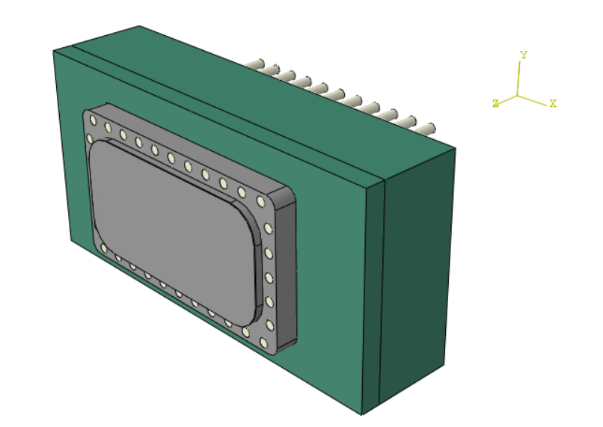

高水压螺栓仿真
配置试件与载荷，查看候选布置及 Abaqus 存档结果。
仿真结果
32 根螺栓 / 5 MPa / jieguo2

查看存档装配图

按附件汇总表的四个测点比较混凝土与钢板的 Z 向位移差值。
| 测点 | 32 根（mm） | 16 根（mm） |
|---|---|---|
| 1 | −0.0318 | −0.091726 |
| 2 | −0.1509 | −0.130675 |
| 3 | −0.3016 | −0.4086 |
| 4 | −0.2834 | −0.5411 |
按这四个测点的最大绝对差值比较，32 根为 0.3016 mm，16 根为 0.5411 mm。该比较只覆盖这两组存档数据。